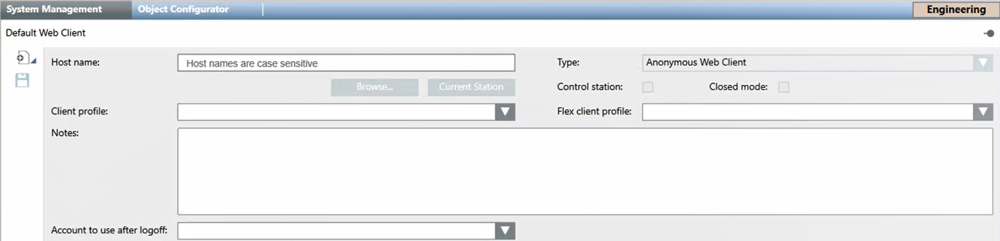

Configuring Anonymous Flex Clients
Flex Client is a thin client for Desigo CC operators. It is available as a browser-based web app and as a Windows desktop app.
A Flex station can be anonymous or identified, depending on whether the computer running Flex Client authenticates itself to the Desigo CC server with a host certificate.
For anonymous Flex stations, the settings are determined by the Default Web Client object. This means that you can have multiple anonymous Flex stations, but they will all collectively share the settings (Flex client profile, Scope, Event and Application Rights, enable/disable logon) that you define here for the Default Web Client.
Prerequisites
- The Flex web app is configured in Desigo CC, and the devices or computers that will connect to Desigo CC as anonymous Flex Clients are able to access the [Flex client application URL]
For more information, see Setup Checklist for Flex Client. - System Manager is in Engineering mode.
- System Browser is in Management View.
Configure Client Profile for Anonymous Web Stations
- In System Browser, select Project > Management System > Clients > Default Web Client.
- Select the System Management tab.
- There is no Host name. The Type field is set automatically to
Anonymous Web Client. - From the Flex client profile drop-down list, select the client profile that will apply to all anonymous Flex Client stations.
NOTE: If you opt not to do this, you must ensure that an appropriate client profile is defined for all users instead. See Configuring Client Profiles. - Click Save
 .
.

Enable Logon from Anonymous Web Stations
- In System Browser, select Project > Management System > Clients > Default Web Client.
- Select the Extended Operation tab.
- Check that the Operational Status property indicates
Enabled. If it does not, click Enable.
- Logging on from all anonymous Flex client stations is allowed.
Limit Scope, Event and Application Rights for Anonymous Web-Based Stations
For security purposes, the scope, application and event rights for anonymous Flex client stations should be restricted.
- In System Browser select Project > System Settings > Security.
- Select the Security tab.
- Create a Management station type group named Anonymous Web Client and add the Default Web Client station to that group.
- Define the required Scope rights, Event rights, and Application rights.
These will apply to all anonymous Flex client stations.
For detailed instructions, see New Station Group for Anonymous Web Clients.
NOTE: Scope, event and application rights can also be defined for user groups. A user can access those capabilities that are enabled in both the relevant user group AND management station group.
For example, if a user with full scope rights logs on to an anonymous Flex station for which scope rights have been restricted, the restricted scope rights will apply.
Configure Event Settings in UL/ULC Flex Client
In UL/ULC profiles, for correct behavior of the Event List, it is necessary to set the Event List to open automatically when a new event occurs.
- In System Browser, select Project > System Settings > Clients Setting > Event Settings > Flex Client.
- Select the Event Settings tab and expand General Settings.
- In On new event, select Open Event List.
- Click Save .
For a more complete view of the configuration of event rights, see Event Settings Workspace.
Check the Outcome from a Flex Station
To verify the results of the above configuration, log on to Desigo CC from an anonymous Flex Client station (see Access Flex Client URL) and check that the client profile and scope/event/application rights correspond to those configured.